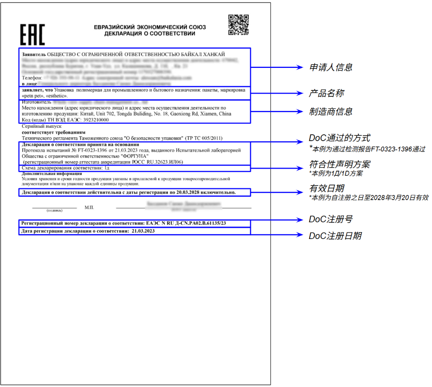

按确认的方案办理
确认产品与型号范围、申请人、制造商和检测要求；已有文件先核对是否覆盖当前 SKU。
先提交实际商品资料，按平台反馈准备文件；已有证书可直接核验。本页是操作指引，审核与上传在 OGR 后台完成。
准备品名、型号、品牌、制造商、用途、材质、适用人群、HS Code 与实拍图片；带电商品补充电压、电池、无线功能等参数。
查看照片清单 →由审核团队与清关行确认适用法规、CoC / DoC、其他准入文件及标签要求。根据后台 ImportChecklist 准备资料；信息不足时按反馈补充。
尚未开通？查看开通与建单说明 →确认产品与型号范围、申请人、制造商和检测要求；已有文件先核对是否覆盖当前 SKU。
仍需确认豁免说明、其他准入文件、标签和品牌要求。按后台清单上传，等待平台文件审核。
补充照片、用途、材质、参数等缺失信息，等要求明确后再备货发运。
EAC 反映合规要求，不能代替俄罗斯销售权。已有跨境店文件，也需按 OGR 要求重新核对。
确认技术法规、CoC / DoC 类型、申请人、制造商、产品系列与型号范围，再确认报价和周期。已有工厂文件也要逐 SKU 核对适用范围。
根据审核确认的要求寄送样品，保留物流、进口记录与检测报告。项目指南给出的常见参考为 5 件样品、空运 7–10 天、检测 2–4 周；实际数量、周期和费用以方案为准。
核对注册状态、有效期、法规、型号、生产商及样品记录。完成平台审核，并确认包装标签、品牌授权和发货商品一致，再安排发运。
流程与参考周期依据 OGR EAC 认证指南原文 ↗。
输入完整编号，核对文件类型、状态和有效期。DoC 查声明栏目，CoC 查认证证书栏目；二维码和一张查询截图不能替代当前记录。
三处的制造商、品名、型号范围、HS Code 和适用法规要对应。若正文写“见附件”，必须取得附件并找到你的具体型号。
保留检测报告、样品物流与合法进口记录。按项目指南核对 1Д / 1D 等方案和样品路径，完成平台的文件审核；不凭方案代号自行判断可以免寄样。
编号能查到，但型号不在范围内：这份文件不能直接用于当前 SKU，应补充覆盖依据或重新确认方案。
制造商不同，但商品看起来一样：不能因为外观或类目相同就套用文件，先核对实际工厂。
只拿到一张有章的扫描件：继续核对注册记录、正文、附件和报告依据，不能仅凭印章判定可发货。
EAC 是 Eurasian Conformity，即欧亚合格评定标志。它表示商品已完成适用技术法规要求的合格评定，适用范围包括俄罗斯、白俄罗斯、哈萨克斯坦、亚美尼亚、吉尔吉斯斯坦。
标志背后要有适用的合规依据。不能仅凭包装上印了 EAC，就认定这个 SKU 已获准进口和销售。
由认可的认证机构按适用法规和认证方案签发。核对证书时，要看产品范围、制造商、型号和检测依据。
由申请人依据适用法规及符合性证据办理声明注册。它有自己的适用范围和责任要求，不能自行用它替代 CoC。
在 OGR 中，这些资料用于商品进口清关和本地销售审核；品牌授权则证明你有权销售该品牌，两者分别准备。
先选择 DoC 或 CoC，再点字段看原图上的位置与核对方法。两张都是真实来源的教学样张，部分信息已模糊；仅用于识读文件。

选择要核对的字段，原图会标出对应区域。
Регистрационный номер / № ЕАЭС
按完整编号，到对应官方栏目核对。
| # | 被拒原因 | 正确做法 |
|---|---|---|
| 1 | 只给 HS Code | 同时给图片、用途、材质、型号、生产商、适用年龄 |
| 2 | 证书范围没覆盖 SKU | 逐个核对品名、型号、材质、生产商 |
| 3 | 成人款儿童款共用证书 | 分开判断、分开办证 |
| 4 | 不同工厂共用证书 | 制造商必须完全一致 |
| 5 | 没有检测报告 | 保留报告、实验室资质和样品记录 |
| 6 | 样品没合法进口记录 | 走正规渠道寄样，保留申报记录 |
| 7 | 用 1Д 规避检测 | 按法规选方案，不只看价格 |
| 8 | 证书过期或没年审 | 确认有效期、年审和注册状态 |
| 9 | 漏了充电器或无线模块 | 套装拆开逐项判断 |
| 10 | 缺品牌授权 | EAC 不等于销售权，授权链要完整 |
文件出错的后果：清关延误、补材料、罚款、注册被拒；重新办证期间货压在海关仓 1–1.5 个月。
| 公司 | 经理 | 联系方式 |
|---|---|---|
| YG | Liu Ya | 微信 +86 130 0311 5437 · lyudmila@dmlcompany.com |
| YG | Yang Yujia | 微信 +86 136 8192 6087 · yangyujia@shug.work |
| QIROSS | Alex Tse | 微信 szmoscow · 39373048@qq.com · +86 137 138 09037 |
| Status | Yuliya Popazova | 微信 Sertlogistik39 · sertlogistik39@yandex.ru · +7 911 492 1794 |
项目认证指南提示：后台联系方式可能有误，可请对接的 Ozon 项目经理建群确认。下表保留原资料信息。
平台文件审核通过，并确认费用与单证后，再安排发货。